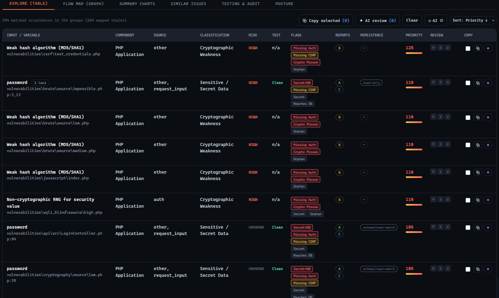
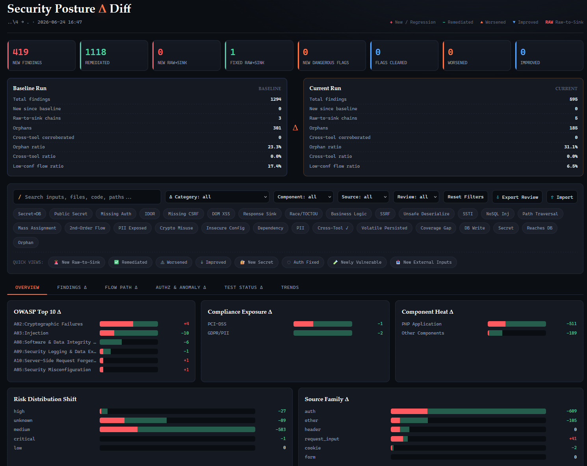
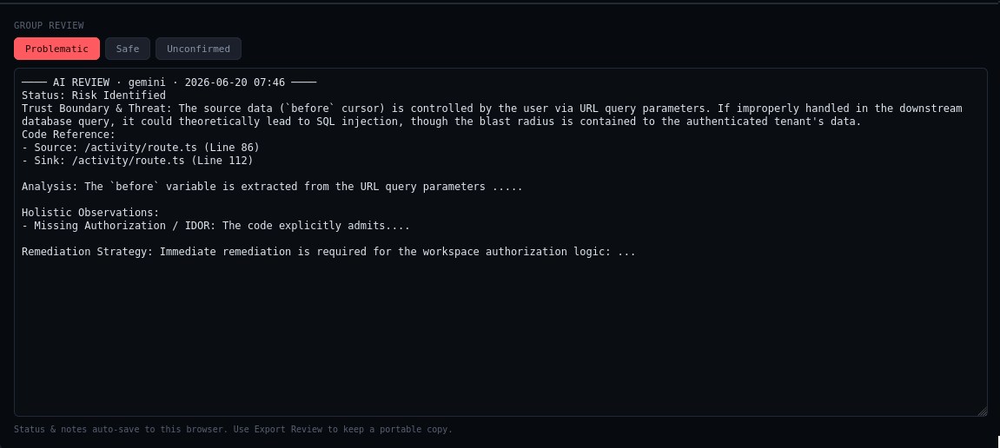

ScanKit
Static analysis that inventories every external input to your application, ranks the risks, generates tests, and feeds AI-assisted review.
One managed, explainable dataset for your attack surface
ScanKit is a static-analysis pipeline that scans your application code, inventories every external input, ranks the risks, generates tests for them, and feeds AI-assisted review. Request parameters, headers, cookies, webhooks, environment variables, form fields, and datastore reads all land in a single correlated report - so your team gets one ranked worklist instead of a wall of equally-weighted alerts.
Why ScanKit matters
Security review only works when every number is defensible. ScanKit attaches transparent reasoning to each finding, cross-checks inputs across independent scanners, and confirms risk against a live system - so a "critical" score is demonstrated, not estimated.
What you get
Previews of the reports ScanKit produces - real screenshots to follow

A single correlated report of every external input, ranked by priority.

See exactly what a patch changed in your attack surface.

Focused explanations of why a path is risky and how to fix it.
How it works
A seven-stage pipeline from raw code to a defensible, version-tracked report
Scan the latest version of your app
Run a full external-input scan against the current codebase to build a complete inventory of every entry point: request parameters, headers, cookies, webhooks, environment variables, form fields, and datastore reads.
Inventory external risks, ranked by priority
Every input lands in a single correlated report, tagged with a transparent priority score, risk level, and aggravating factors - such as data reaching the database - with the reasoning attached to each item.
Backed by multiple analyses
Independent scanners cross-check every input, and each finding is tagged with how many confirmed it across multiple reports.
Generate tests and connect to your tools
Each finding becomes an executable test, with web routes resolved from your code, that plugs into your existing security pipeline.
Confirm risk against a live system
Run the generated tests against a running target and let confirmed-exploitable results raise the finding's priority.
Review risky code with AI, guided by explanations
Each finding is a normalized record that carries its code context and risk tags, so you can hand a specific risky path to an AI reviewer and get a focused explanation of why it's dangerous and how to fix it.
Compare two versions to see what a patch changed
Scan two versions of the app and diff the reports to see exactly which external risks were introduced, removed, or modified by a patch.
Built for defensible security review
Every feature exists to make a finding explainable, verifiable, or measurable
Transparent priority scores
Each input is tagged with a priority score, a risk level, and aggravating factors - with the reasoning attached. No black-box ranking.
Multi-scanner confidence
Independent analyses cross-check every input, and findings are tagged by how many scanners confirmed them, so you weight effort by confidence.
Tests from your code
Findings become executable tests with web routes resolved straight from the codebase, ready to run against a live target.
Confirmed, not estimated
Live-system confirmation lets demonstrated-exploitable findings raise their own priority - proof backs every critical score.
AI review with sources
Hand an AI reviewer a specific risky path and get focused, sourced guidance on why it's dangerous and how to fix it.
Release-as-a-delta
Diff two scans of your app to see exactly which external risks a patch introduced, removed, or modified.
Turn your attack surface into one managed dataset
See ScanKit rank your application's external inputs into a single, defensible, version-tracked report. Contact us to run it against your codebase.
Request a Scan